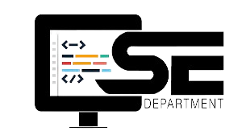

Courses Available
4 years B.Tech Program
Computer Science & Engineering (Seats-90)
& Data Science (Seats-30)

The B.Tech. Computer Science Engineering & B.Tech. Data Science program provides professional education in Computer Science to prepare the student for Graduate study or for a career in the computing field. Students learn concepts and skills needed for designing, programming, and applying computer systems while also learning the theoretical and mathematical foundations of computer. The students of department are trained in Computer Programming for engineering applications to meet the IT Industry challenges.
Department comprises with full equipped software development labs, computer Networking lab and Linux labs all the laboratories are equipped with various latest software and current hardware configurations. The available software are Windows 7, Windows 10, Windows Xp, Windows 2003 Server, Red Hat Linux Enterprise, JAVA, Python 3.4.4, TC++, Visual Studio 6.0, Oracle9i, Linux, Novell Netware, Microsoft Office 2007 etc. All laboratories are provided with 15 KVA UPS system to provide uninterruptable power supply. The Department looks after the computer maintenance of the entire campus of the institute; the Department is a broad discipline that employs a variety of approaches in an effort to advance our understanding and use of computing, the department focuses on development and strengthening system thinking, problem solving, analysis, design, research, team work, communication skills, and readiness for lifelong learning. The courses run by the department use mixed techniques of interactive lectures, guided case studies, literature surveys and project work that require team work and critical and creative thinking.
The objective of the department is to produce engineering graduates with academic excellence, positive attitude, good communication and technical skills enriched with self confidence. This will help them for easy employment as well as for further higher studies in India or abroad.
Civil Engineering (Seats-60)
The department of Civil Engineering was established in 2009.It is one of the premier department of the Institute .The curriculum of these programs encompasses latest developments in the field as well as present day and future needs of Industries Upcoming Civil Engineers from our institute are well groomed specially in the areas of software development/handling and Research and Development activities apart from traditional areas. Continuous updating in the curriculum polishes the budding engineers to meet the challenge posed by newer technologies. Department has enriched potential and dedicated faculty members whose whole hearted involvement is the biggest strength. Civil Engineering Dept of college is fully equipped with best position of teaching faculty, sophisticated laboratory equipments and latest computational software’s like STAAD, AUTOCAD etc. which helps the students to develop expertise in Civil Engineering.
The dept has achieved high standard of quality education more than 10 highly qualified and experienced teaching faculty members train the students to attain good professional status in their lives.The Civil Engg. Curriculum contains detailed study of building and structural designing (residential and industrial) preparation of drawings, material surveying, soil investigation, water resource management, road and railway transportation techniques, irrigation and project management etc.
Department looks after overall development of its students. As a result of these efforts students from the department consistently perform well in academics, sports and other activities. Students participate actively and excel in technical seminars, workshops, sports etc. The department has been pro-active in interaction with the industry to familiarize the students and faculty with the latest technologies and trends.
Mechanical Engineering(Seats-60)
The Mechanical Engineering Department is one of the most reputed departments in terms of facility, faculty, students, and activities. The Department is known for the Expertise especially in CAD-CAM Manufacturing and Production Technology. Experimental and computational facilities are being continuously upgraded. Industry interaction has been increased with industrial visits and arranging expert lectures by industry personnel and carrying out the industry sponsored projects for students. The Department comprises of state-of-the-art laboratories that are well equipped with the most sophisticated instruments. Its mission is to produce the highest quality of graduates to serve the society, and to conduct leading-edge research. To achieve its mission, the Department strives for excellence in teaching, research and professional services. The Department is committed to prepare effective and responsible graduate engineers for global requirements by providing quality education. Keeping itself up to date with the latest developments and trends in the field, the department consistently strives to provide world class facilities for education and research. An interactive relationship is maintained between the students and staff which enable the students to develop a sound foundation in the stream in a conducive environment.
To make significant contribution through education and research in mechanical engineering to solve the problems of the native states and its society by maximizing the use of local resources. The laboratories in the department are recognized in a number of areas as testing facilities. It also has workshops for training in smithy, carpentry, welding and machine tools.
Electronics & Communication Engineering(Seats-30)
Department of Electronics And Communication do facilitate the students by providing lectures from the faculties of IITs and institutes of national reputes through interactive learning based program of EDU SAT which is a join program of ISRO and RGPV Bhopal. Audio visual facilities are also available through which students can take advantage of the resources of IITs through NPTEL. Apart from curriculum the students of the department are prior engaged in the project activities right from second year itself instead of final year. Regular industrial visits are arranged for the students ones in each semester. Guest lectures are continuously delivered from the persons of industry and institutes of national reputation. 24 hour net facility is available for the students in the high tech labs equipped with dedicated LAN connections.
The department has taken development as a continuous process and assured this through its mission. The department has blend of senior, young and dynamic staff. The career option offered to students are diverse, ranging from electronic product design to heavy electrical plant maintenance, from research to production, from technical focus to customer focus. In addition, the Department also realizes that in today’s frenetically competitive market world, the students need to be confident, organized, multi-skilled and flexible individuals apart from being imparted training in Electronic Science.
Electrical & Electronics Engineering(Seats-60)
.png)
Electrical and Electronics engineering, the branch of engineering concerned with the practical applications of electricity in all its forms, including those of the field of electronics. Electronics engineering is that branch of electrical engineering concerned with the uses of the electromagnetic spectrum and with the application of such electronic devices as integrated circuits, transistors, and vacuum tubes.In engineering practice, the distinction between electrical engineering and electronics is based on the comparative strength of the electric currents used. In this sense, electrical engineering is the branch dealing with “heavy current”—that is, electric light and power systems and apparatus—whereas electronics engineering deals with such “light current” applications as wire and radio communication, the stored-program electronic computer, radar, and automatic control systems.
Department of Electrical and Electronics do facilitate the students by providing lectures from the faculties of IITs and institutes of national reputes through interactive learning base program EDU SAT which is a join program of ISRO and RGPV Bhopal . Audio visual facilities are also available through which student can take advantage of the resources of IITs through NPTEL apart from curriculum. The students of the department are prior engaged in the group discussion, seminars and project activities right from second year. Regular industrial visit are arranged for the students once in each semester .Guest lectures are continuously delivered from the person of industries and institutes of national reputation. 24 hour internet facility is available for the students in the high tech labs like Power system Lab, Electrical Machine Lab, Basic Electrical and Network ,Software Lab equipped with dedicated LAN connections.
3 years MCA Program
Master's of Computer Application (Seats-60)
MCA Department has always been on the path of progress with quality education in the field of professional Master’s degree in computer Applications. The institute headed by a dedicated team of renowned person having zeal to provide excellence in education and to create the talent for future. The Department of Computer Applications offers Post-graduate course. It has its own separate building; computer laboratories equipped with high configuration machines, latest software, and internet to fulfill the industrial needs of the students and help to upgrade the knowledge of faculties. An enriched library is with sufficient number of books, journals and e-titles.
The Department has always been on the path of progress, equipped with experienced and dedicated faculties each with a highly qualified degree and has a strong community to technical education.Research papers in various fields are regularly published by the faculty members. Faculties of the department have a good hand for the guidance of the Post-graduate students in their project work. They excel in their field and provide a strong knowledge base to the students.
2 years M.Tech Program
Master's of Engineering in Industrial Engineering & Management (Seats-18)
This course is run under the Discipline of Mechanical Engineering offering postgraduate degree course.
Industrial Engineering and Management course is related to understanding, development, and implementation of systems involving human being and other resources. In this course, students are taught various methods to manage and optimize the use of available resources. These include man, material and equipment for production and manufacturing by applying mathematical and engineering tools.
The objective of M.E/ M.Tech in Industrial Engineering and Management is to perform in the fields of design, R&D section, manufacturing, operations and services. Industrial engineers are to reduce the waste & improve performance. They have to achieve the end product with no errors & study the product requirement more carefully to give the best result
Students graduating from this programme will have a strong interlinked knowledge between engineering and management with the right set of project management and problem solving skills allowing you to enter leading roles in industry. Graduates will find employment in national and international industries and will be capable of applying transferable skills manufacturing projects and industrial research and development.
2 years MBA Program
Master's of Business Administration(Seats-60)
Masters Of Business Administration (Core) MBA (Full Time) Approved by AICTE New Delhi and Affiliated to D.A.V.V. Indore, Provide Dual Specialization in the fields of: (i) Financial Management (ii) Marketing Management (iii) Human Resource Management (iv) Information Technology (v) Production and Operation Management (vi) Business Analytics
A. Programme Objectives:
MBA Programme seeks to shape the students into successful and responsible professionals by educating them according to changing requirements of dynamic world. This is accomplished by setting the following goals:
1. Development of leadership skills and professionalism right from beginning of their academic year.
2. Managing and motivating a “Team” by being a part of it.
3. Effectively handling adversities that are creating challenges for the growth of organization.
4. Formulation and implementation of integrated strategies by applying multi disciplinary knowledge.
5. Overall personality development by inculcating a sense of ethical values and social responsibility.
B. Programme Outcomes
Upon successful completion of the course, a student will be able to learn:
1. Application of conceptual knowledge for decision making both as an individual or a team with the help of assignment.
2. Performing in and handling multidisciplinary areas by participation in extra and co-curricular activities.
3. Crossover learning experience through industry exposure and meets.
4. Professional integrity by understanding individual, professional, ethical and social responsibility.
5. Recognition of the need for, and an ability to engage in continuing professional development and life-long learning.
3.Eligibility A candidate seeking admission to MBA Programmes should be a Graduate with at least 50% marks and 45% marks in case of SC, ST, OBC (excluding Creamy Layer).